Links to External Photos 2003
Most online copies of these photos are probably gone now, but this page has place holders for dead links. Kathy Sharp's Shutterfly Photos share site is the most likely place for these photos to be if they exist online, since Shutterfly rescued the albums that PhotoWorks hadn't already blown away. The photos that were at Ofoto.com are problably lost.

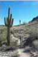
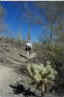
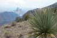
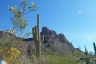
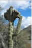
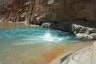
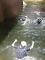
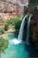
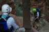
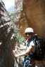
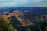
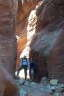
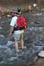
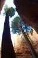
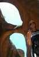
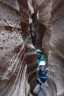
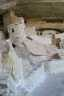
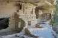
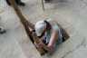
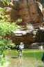
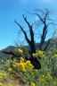
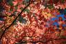
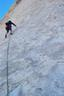
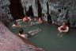
Most of the PhotoWorks albums are not accessible right now. PhotoWorks changed their website and creating new links is going to take quite a bit of time. The Photoworks links that work now are marked "fixed at PW."
Most of the links were to high-resolution photos uploaded from Kathy's 2.2 megapixel digital camera (Kodak DX3600).
- Kathy's Favorites as of 9/2/03, at WebShots
- (PhotoWorks) Ford Canyon Trail (White Tanks) day hike 1/4/03
- (PhotoWorks) Mormon Trail Loop (South Mountain) day hike 1/5/03
- (PhotoWorks) National Trail Trek (South Mountain) day hike 1/11/03
- (PhotoWorks) Boulder Basin (Superstitions) day hike 1/12/03
- (PhotoWorks) Miners Needle (Superstitions) day hike 1/19/03
- (PhotoWorks) Go John Trail (Cave Creek Rec. Area) 1/25/03
- (PhotoWorks) Ford Canyon and Willow Canyon Loop (White Tanks) 1/26/03
- (PhotoWorks) Peralta Trail (Superstitions) 2/2/03
- (PhotoWorks) Superstition Ridge Line day hike 2/8/03
- (PhotoWorks) American Heart Walk (Tempe Beach Park) 2/15/03
- (PhotoWorks) Picacho Peak (near Tucson) day hike 2/23/03
- (PhotoWorks) Cave Creek Trail (near Seven Springs) day hike 3/2/03
- (PhotoWorks) Blue Spring (Little Colorado River Gorge) day hike 5/3/03
- Salome Creek canyoneering photos at WebShots.com from VOA volunteer Nathan Bradley's digital camera 5/10/03
- Havasu Canyon (Grand Canyon) four-day hiking trip 5/16/03
- (PhotoWorks) digital camera photos
- camera photos (not from digital camera) temporarily on 2004 page
- Zion National Park (Utah) nine-day canyoneering trip (May 24-June 1, 2003)
- 1 and 2: driving up and Behunin Canyon
- 3: (PhotoWorks) Spry Canyon
- 4: Keyhole and tubing temporarily on 2004 page
- 5: Mystery Canyon (waterproof camera died) temporarily on 2004 page
- 6: (PhotoWorks) Subway (filled up digital camera memory card before reaching the Subway proper!)
- Sharps' Grand Circle family vacation (June 7-15, 2003)
- (Ofoto) North Rim (Grand Canyon)
- Buckskin Gulch
- National Park: (Ofoto) Weeping Wall, Virgin River (Ofoto) Narrows, and (Ofoto) Orderville Canyon
- (PhotoWorks) Cedar Breaks
- (PhotoWorks) Bryce Canyon
- Escalante: (PhotoWorks) Peek-A-Boo Gulch, (PhotoWorks) Spooky Gulch, (PhotoWorks) Devil's Garden, more temporarily on 2004 page
- (PhotoWorks) Hovenweep
- Mesa Verde (digital camera battery died)
- (PhotoWorks) Cliff Palace
- (PhotoWorks) Balcony House
- (PhotoWorks) Spruce Tree House
- (PhotoWorks) Red Boxes (West Clear Creek) canyoneering 7/12/03
- Four Peaks day hike, 9/13/03: (Ofoto) Kathy's photos of the easy hike, Richard's photos of the strenuous hike
- West Fork of Oak Creek annual fall colors hike, 10/26/03: Richard's and (Ofoto) Kathy's photos.
- (Ofoto) Joshua Tree Thanksgiving rock climbing trip, November 28-30, 2003
- (PhotoWorks) Arizona Hot Springs (Ringbolt Canyon), backpacking trip, December 6-7, 2003
Last updated: December 21, 2011